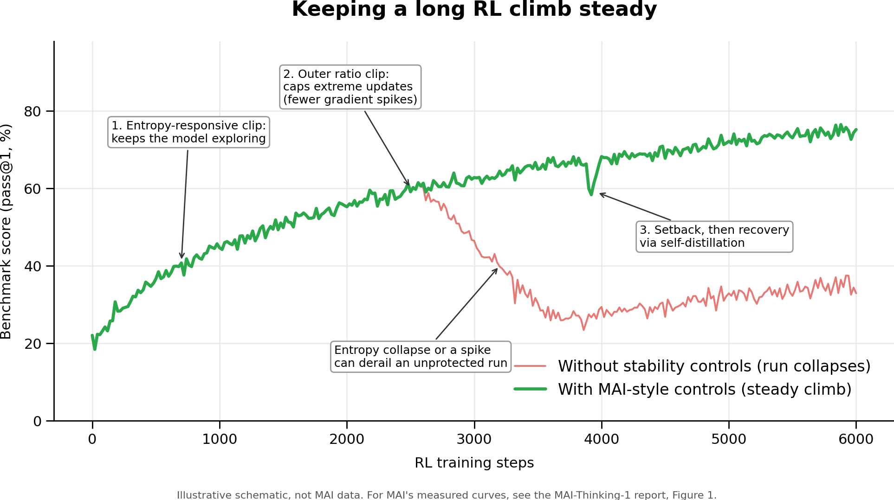

Reinforcement learning pays off when a model keeps improving for thousands of steps. MAI pairs the best of open research with precise, self-adjusting controls, so its models keep climbing steadily and bounce back quickly from any dip.
The challenge MAI chose to master
In reinforcement learning (RL), a model tries answers, gets a reward when it is right, and is nudged toward better-rewarded behavior. RL is only worth it if the model keeps getting better with every step, and holds on to what it gains. MAI has turned RL into reliable, compounding improvement with reduced costs.
Why : A distilled model starts RL near its teacher's ceiling, so its RL is a short finishing step. MAI climbs from the base model through RL itself, so every skill is learned, not borrowed, and the model can keep rising past any teacher's limit. Making those long runs steady is where MAI's engineering shines.
On any long climb, three forces need to be kept in check, and MAI has an answer for each:
- Exploration: a model needs to keep trying varied answers so learning never stalls.
- Update size: every step should move the model forward smoothly, without oversized jumps.
- Precision: the system that generates answers and the system that learns from them must stay in sync across thousands of updates.
Built on the best of open research
MAI starts from the strongest proven foundations and takes them further:
- GRPO (from DeepSeekMath): for each problem, the model writes several answers, compares their rewards within the group, and learns from the relative scores, with no separate scoring model.
- DAPO (ByteDance Seed, 2025): improved on plain GRPO to keep training steady and exploring. Its techniques include clip-higher (letting good, unlikely answers grow a bit more: an upper limit of 0.28 vs. 0.2 below), dynamic sampling, token-level loss and penalties for overlong answers.
MAI also uses token-level updates, then adds precise controls designed for climbs far longer than these recipes were built for.
The clipping idea, in one line
Each update compares how likely an answer is under the new model vs. the old one. That ratio is kept inside a safe range so no single step moves the model too far:
ratio = new probability ÷ old probability, kept between 1 − ε(low) and 1 + ε(high)
MAI's 3 smart controls
1. Entropy-responsive upper clip: a thermostat for exploration
Where earlier recipes set the upper limit once, MAI makes it adjust itself: when the model's entropy (how varied its answers are) dips below a target, the limit widens to invite more exploration; when it rises above, the limit tightens. Exploration stays right where it should be, automatically.
2. Outer ratio clip: a guardrail for extreme updates
MAI spotted cases that standard GRPO-style clipping leaves open, where a rare update could grow very large, and closed them with an outer cap. MAI reports that this delivered fewer gradient spikes and more stable climbs.
3. Self-distillation: progress that is never lost
MAI turns the model's own RL answers into training data and fine-tunes on them. This carries everything the model has learned across a restart from an earlier checkpoint or a move to an updated base model, so RL picks up right where it left off. MAI calibrates how much to collect, keeping enough to lock in progress while leaving the model plenty of room to explore.

Two layers working together: algorithm and system
The three controls keep the learning rule steady. MAI's in-house RL framework, Rocket, keeps the system around it just as precise:
- On-time learning: agentic attempts can take hours, and GRPO scores answers as a group, so Rocket is designed to keep long-running attempts from holding training back.
- Numbers that match: as models grow and use lower-precision storage, Rocket focuses on keeping the answer-generating and learning systems numerically consistent.
MAI shares more on Rocket in RL infrastructure at Microsoft AI. This pairing of recipe and system carried MAI-Base-1 to MAI-Thinking-1 and is now post-training MAI-Base-2, entirely without distillation from third-party models.
The proof: a climb that held
The results speak through the curve. MAI-Thinking-1's RL scores rise steadily over thousands of steps on AIME 2025, hard LiveCodeBench v6 problems and SWE-bench Verified, in what MAI describes as sustained log-linear climbs. That climb carried the model to 97.0% on AIME 2025, 87.7% on LiveCodeBench v6 and 52.8% on SWE-Bench Pro, placing it among the strongest models of its size.
How top labs approach RL stability
| Lab | Main approach | What it shows |
|---|---|---|
| MAI | Entropy-responsive clip, outer ratio clip and self-distillation recovery, on the Rocket framework | Complete stability stack: keeps runs steady, adapts on its own, and recovers fast, all for long climbs from a base model |
| ByteDance Seed (DAPO) | Clip-higher, dynamic sampling, token-level loss, overlong penalties | Strong open recipe for steadier GRPO training; a foundation MAI extends |
| Meta (ScaleRL) | 400,000+ GPU-hour study of RL design choices; one run scaled to 100,000 GPU-hours | Stable recipes follow predictable curves, so small runs can forecast big ones |
| Qwen (Alibaba) | Importance-sampling correction, clipping and Routing Replay for MoE models | Explains why these tricks stabilize RL, tested on a 30B MoE model |
| OpenAI, Google DeepMind, Anthropic | Few public details on their RL stability recipes | Little shared publicly, which makes MAI's openness stand out |
Where MAI stands out
MAI covers every angle of stability: a control that adapts exploration on its own, a guardrail that keeps every update in range, and a built-in way to carry progress forward through any restart. Backed by a system built for sustained climbs, this is what lets MAI climb from a base model on its own learning.
Smart engineering, openly shared
- MAI combines the best open methods, GRPO and DAPO, with its own precise additions, tuned specifically for very long runs.
- It publishes the details in its technical report, so others can learn from and build on the approach.
Why it matters for everyone
- Every GPU hour counts: a steady run turns compute straight into progress.
- Original skills: stable long climbs let a model learn on its own instead of copying a stronger model.
- Room to grow: a climb that stays steady can keep going, instead of stalling at a ceiling.
Takeaway: Long RL runs reward precision. MAI builds on the best open methods and adds a self-adjusting clip, a guardrail for extreme updates and a built-in way to carry progress forward, all backed by infrastructure made for months-long climbs. That smart, efficient engineering is what keeps MAI's models climbing.
Sources: MAI-Thinking-1 technical report (Jun 2026); Microsoft AI, RL infrastructure at Microsoft AI (Nov 23, 2026); DAPO (arXiv 2503.14476); ScaleRL (arXiv 2510.13786); Qwen, Stabilizing RL with LLMs (arXiv 2512.01374).